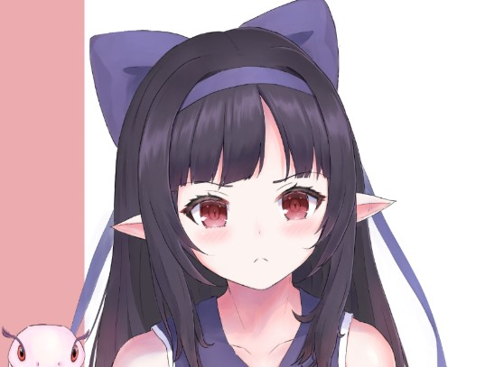
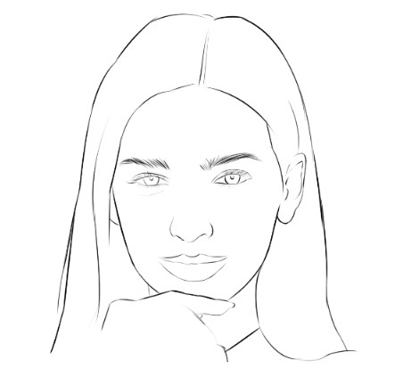
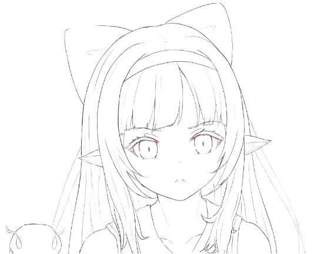
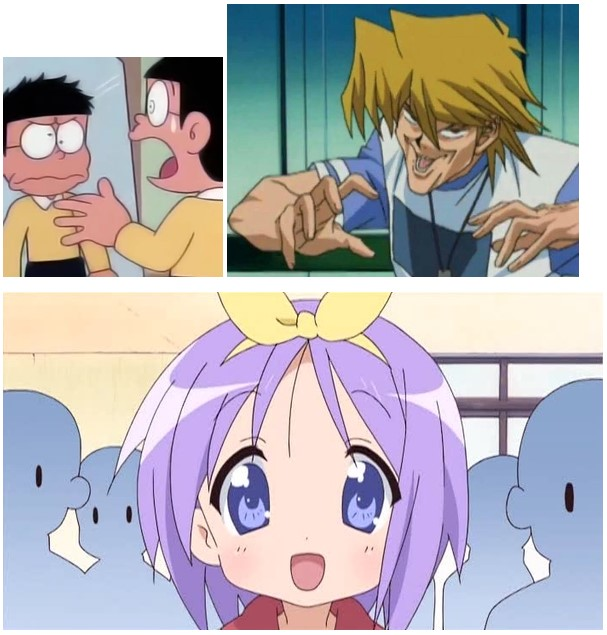
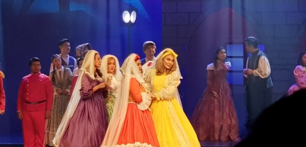
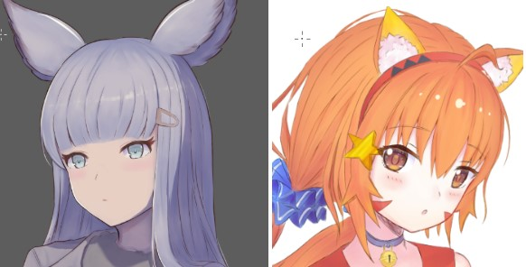
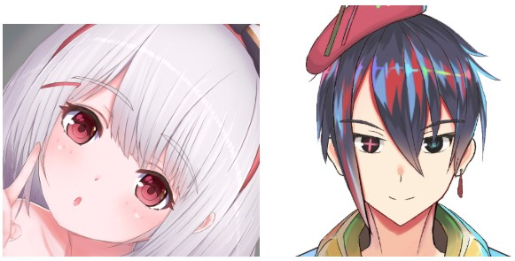

นี่คือคนจริงๆ
ส่วนนี่…. คือตัวละครที่ผมวาด

หากเทียบสัดส่วนกันโดยแต่มันกันตาเปล่าๆ ก็เห็นได้ชัดใช่ไหมครับ ว่าตัวละครที่ผมวาด มีขนาดตาที่ใหญ่กว่า คนปกติ แต่ว่าเรากลับไม่รู้สึกถึง ความผิดปกติของภาพ นั่นเป็นเพราะอะไรกัน
วันนี้ผมจะมาแก้ข้อข้องใจของทุกคนกัน จากข้อมูลที่ผมรวบรวม ศึกษา และ วิเคราะห์ มาครับ
1. ตาของตัวละครใหญ่ขึ้น เพราะข้อมูลที่หายไป
เมื่อเราวาดตัวการ์ตูนต่างๆ ด้วยดินสอ หรือหัว brush มันเป็นไปได้ยากสำหรับมือใหม่ ที่เราจะวาดทุกอย่างที่เราเห็นลงไปได้ อย่างเช่น Texture ของผิวหนัง หรือเส้นผม

โดยนี่คือภาพผู้หญิงด้านบน ที่ผมลองตัดเส้น โดยใช้แค่ปากกา เราจะเห็นได้ว่า เมื่อ Texture หายไป จะทำให้หน้าของเธอดูแก่ขึ้น และปากใหญ่ขึ้น และผมไม่สามารถวาดเส้นผมของเธอได้ จมูกของเธอทำให้ภาพดูเทอะทะ และเธอไม่สวยเหมือนตอนที่มี สี และ Texture

ส่วนนี่คือตัวละครที่ผมวาด จะสังเกตได้ว่า การที่เราวาดตาใหญ่ขึ้น ทำให้ภาพของเราไม่เปลี่ยนไปมากนัก เมื่อลงสี ทำให้การวาดรูปในแต่ละรอบ
เราจะสามารถ ภาพที่เราวาดออกมาเสร็จนั้น จะไม่ต่างไปมากเมื่อเราร่างเส้น และ การที่ตาใหญ่ขึ้น ทำให้ภาพดูเป็นธรรมชาติมากขึ้น ต่อสายตาของผู้วาด ให้ขณะที่ยังวาดไม่เสร็จ
2. ตาของตัวละครใหญ่ขึ้น เพราะ ตาเป็นส่วนที่ใช้ในการสื่ออารมณ์

จากภาพด้านบน เราจะเห็นได้ว่า ส่วนต่างๆของร่างกาย ที่มีส่วนในการใช้ในการสื่ออารมณ์ของตัวละคร จะมีขนาดใหญ่ ขึ้น หรือเปลี่ยนไป จาก คนจริงๆ เช่น ตา คิ้ว ปาก ชิ้นส่วนเหล่านี้ จะมีรูปร่าง ลักษณะ ที่ต่างออกไปจากคนจริงๆ การปรับเปลี่ยนนี้ ทำขึ้นเพื่อ แสดงอารมณ์ของตัวละครเหล่านั้นที่เกิดขึ้น
เช่นเดียวกับละครเวที ที่ผู้คนจำเป็นต้อง over acting เพื่อให้เขาถึงบทบาทนั้นๆ

แต่ในทางกลับกัน จมูก ซึ่ง ไม่ค่อยมีส่วนในการแสดงอารมณ์จะถูกทำให้เล็กลง หรือ หู ที่มีหน้าที่ทำแค่แสดงให้เห็นว่าตัวละครก้มลงหรือ เงยหน้าขึ้น
3. ตาของตัวละครใหญ่ขึ้น เพราะ เป็นการบ่งบอกอายุของตัวละคร เพศ และ นิสัย

จากภาพด้านบนที่ผมวาด จะสังเกตได้ว่า การที่เราวาดตาที่ใหญ่ขึ้น ทำให้ตัวละครเราดูเด็ก แล้วการที่วาดตาเล็กนั้นทำให้ตัวละครของเราดูเป็นผู้ใหญ่ขึ้น

หรือตัวละครผู้หญิงส่วนใหญ่ ก็จะทำตาให้ใหญ่ขึ้น เพื่อให้ดูน่ารักขึ้น และ ลักษณะของดวงตา ก็จะบ่งบอกด้วยครับ ว่านิสัยของตัวละครนั้นเป็นอย่างไร แต่ทั้งนี้ทั้งนั้น นี่ก็ขึ้นอยู่กับลายเส้น ของนักเขียนแต่ละคนครับ
ครับและนี่ก็คือ สาเหตุที่ว่า ทำไมตัวละครในการ์ตูน ถึงต้องตาโต จากประสบการณ์ และ การศึกษาของผมมา หากใครมีคำถามอะไรเพิ่มเติม สามารถสอบถามมาได้ที่ facebook page ของผมได้เลยนะครับ